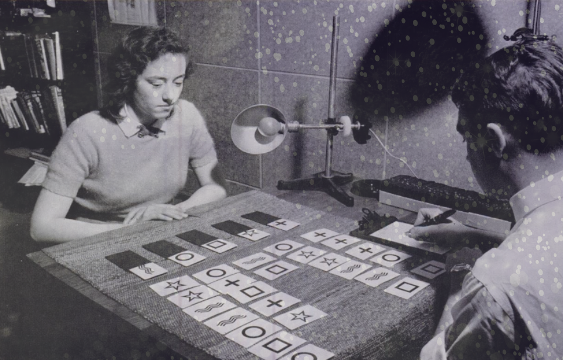

The phrase "contact non-human intelligence" carries a lot of freight. For most people, it conjures field expeditions, flashlights pointed at the sky, and communities organized around belief rather than evidence. That framing has made the subject easy to dismiss.
But the serious research literature tells a different story. Government-funded programs spent decades studying whether human consciousness could access information at a distance. The declassified record now includes documentation of directed consciousness experiments run alongside UAP research. And the term "non-human intelligence" has migrated from fringe forums into official U.S. government testimony on Capitol Hill.
This article surveys what that record actually says. It covers the documented protocols, what they are designed to do, and why the methodology matters. It does not claim that contact is easy, proven, or accessible without preparation. The evidence suggests the opposite.
The record at a glance
- The premise: directed human consciousness may exchange information with NHI, not summon physical craft
- The record: STARGATE, AAWSAP, Monroe Institute contracts, and the 2026 PURSUE files
- The method: coherence, directed attention, reduced analytical overlay, systematic documentation
- The prerequisite: trained signal discrimination, so projections are not mistaken for contact
- The honest limit: no protocol has been validated with independently replicated results
What "Contact" Actually Means in This Context
The first thing to clarify is what "contact" does not mean. The protocols documented in the research literature are not about summoning physical craft. They are not about arranging meetings. The assumption underlying serious contact research is considerably more modest: that directed human consciousness might be capable of exchanging information with non-human intelligence, in the same way that controlled remote viewing appears capable of accessing information about distant physical locations.
The term Non-Human Intelligence (NHI) entered official U.S. government usage through classified and later declassified documents related to UAP. It is deliberately agnostic: it does not specify whether the intelligence in question is extraterrestrial, interdimensional, non-biological, or something else. It is a category, not an explanation. The research programs that studied NHI contact were similarly agnostic about the ultimate nature of what they were working with.
What these programs did assert, based on accumulated evidence, is that some UAP phenomena appear to be responsive to human consciousness. Not responsive in a crude mechanical sense, but in the way that a communication system responds: with apparent awareness, apparent intent, and apparent capacity for information exchange. That is the premise behind contact protocols. That premise remains contested. But it is no longer exclusively the domain of enthusiasts.
What the Declassified Record Actually Says
Three government research streams are directly relevant to directed consciousness and NHI contact.
Project STARGATE and Anomalous Targets
Project STARGATE ran from 1972 to 1995 under the joint sponsorship of the CIA and the Defense Intelligence Agency, with primary research conducted at Stanford Research Institute by physicists Hal Puthoff and Russell Targ. The program's core finding was that trained human viewers could access accurate information about distant physical locations using only coordinate data, with no conventional sensory channel.
What is less widely discussed is the subset of STARGATE sessions that targeted anomalous objects rather than conventional geographic locations. Ingo Swann, the program's primary methodological architect, conducted sessions in the mid-1970s in which he was tasked against what appeared to be structured non-human objects and locations. The transcripts of those sessions, some now declassified, describe details that Swann had no conventional means of accessing and that were consistent with later UAP documentation.
The STARGATE researchers were careful about what they claimed. Puthoff and Targ published in peer-reviewed journals and maintained rigorous protocols precisely because they understood that the implications of their work required airtight methodology. They did not interpret anomalous results as proof of extraterrestrial contact. They documented that the methodology worked on anomalous targets as well as conventional ones, and left interpretation to subsequent researchers.
The Monroe Institute Government Contracts
The Monroe Institute in Faber, Virginia, founded by Robert Monroe and best known for its research into out-of-body experience and altered states of consciousness, maintained a working relationship with U.S. government research programs throughout the 1970s and 1980s. Monroe's Gateway Process, a structured audio-guided consciousness training program using bilateral sound frequencies (Hemi-Sync), was the subject of a now-declassified 1983 CIA analysis titled "Analysis and Assessment of Gateway Process."
That document, written by Army Lt. Col. Jim Channon and later extensively analyzed by independent researchers, concluded that the Gateway Process produced measurable alterations in consciousness consistent with the mental states used in successful remote viewing sessions. It treated the Monroe methodology not as spiritual practice but as a cognitive training system with practical intelligence applications.
The Monroe Institute also contributed directly to STARGATE training. Several operational viewers in the program received training at the Institute, and the binaural audio protocols developed by Monroe informed the relaxation and attunement phases that CRV practitioners use before targeting sessions. The lineage between Monroe's biofeedback-adjacent consciousness research and the STARGATE methodology is direct and documented.
Key Government Programs with NHI-Adjacent Research
- Project STARGATE (1972-1995): CIA/DIA-funded remote viewing program at SRI. Included anomalous target sessions; core methodology developed by Puthoff, Targ, and Swann.
- AAWSAP/AATIP (2007-2012): DIA-funded Bigelow Aerospace program. Explicitly investigated consciousness-UAP correlations alongside conventional sensor data.
- Monroe Institute contracts (1970s-1980s): Government-funded research into altered states as intelligence tools. Gateway Process declassified in 2003.
- PURSUE files (released 2026): Contained documentation of directed consciousness experiments conducted in parallel with UAP research. Includes records of structured protocols for anomalous cognition targeting of non-human phenomena.
AAWSAP and the Consciousness-UAP Link
The Advanced Aerospace Weapons Systems Applications Program, funded by the Defense Intelligence Agency beginning in 2007 and operated through Bigelow Aerospace Advanced Space Studies (BAASS), was the most comprehensive government investigation of UAP ever acknowledged. Unlike its predecessors, AAWSAP explicitly included research into the apparent relationship between human consciousness and UAP behavior.
Multiple AAWSAP research reports documented cases in which UAP phenomena appeared to respond to directed observer attention. The program's scientific framework, developed in part by researcher Colm Kelleher and DIA program manager James Lacatski, treated consciousness as a potential communication variable rather than a confounding one. This was not the position of a fringe program. AAWSAP's senior personnel included physicists, former intelligence officials, and credentialed scientists with decades of relevant experience.
The PURSUE files, made partially available through official channels in 2026, extend this picture. They document at least two structured experimental series in which researchers applied directed consciousness protocols to UAP-related targets, using methodology derived from the STARGATE program. The results of those experiments are not fully public. But their existence is documented.

Human-Initiated Contact Protocols
Most discussion of NHI contact in the civilian research community centers on what can be called human-initiated contact protocols: structured attempts to reach non-human intelligence through directed consciousness rather than through passive observation. The general approach took shape in the late 1980s and early 1990s, distinguishing intentional contact efforts from waiting and watching. The methodology rests on a single claim, that a coherent, directed mental state may function as a kind of signal, and it organizes practice around producing and documenting that state.
The core elements of these protocols are:
- Coherence building: Group or individual meditation protocols designed to synchronize mental state and reduce cognitive noise. The premise is that a scattered, undirected mind produces no usable signal.
- Directed visualization: Sustained mental projection of specific information packets toward an intended recipient. In practice, this means holding a clear, consistent mental image or intention for an extended period without distraction.
- Location pre-targeting: Some practitioners use CRV-style protocols prior to field sessions to gather information about contact-relevant sites. This treats the contact site as a remote viewing target before physical arrival.
- Directed night-sky observation: Coordinated sky-watching sessions in which coherent light signals, audio tones, or other physical phenomena are synchronized with mental contact attempts. The function is partly documentation, since anomalous responses become measurable, and partly the provision of a physical reference point for the directed consciousness.
- Structured observation and documentation: Systematic logging of any anomalous responses: light phenomena, electromagnetic readings, witness perceptions, physical traces.
The scientific status of these contact claims is uncertain. Controlled trials are difficult to design, replication across independent groups is limited, and the evidentiary standard that would establish contact has never been agreed upon. What can be said is that the underlying methodology is consistent with the consciousness research literature: coherence, directed attention, reduced analytical overlay, and systematic documentation are the same elements that distinguish successful from unsuccessful remote viewing sessions. That is a statement about method, not a claim that contact has been demonstrated.
CRV as a Contact Preparation Protocol
Controlled Remote Viewing was developed by Ingo Swann under CIA contract at SRI as a structured, teachable methodology for anomalous cognition. Its design reflects a specific insight: the problem in remote viewing is not access but noise. The information appears to be available. The obstacle is the trained human tendency to impose analytical interpretation on raw perceptual data before that data has been recorded.

The problem in remote viewing is not access but noise. A practitioner without trained signal discrimination is more likely to experience their own projections than any externally originating signal.
CRV training addresses this through structured stages. The viewer moves through a defined sequence of perceptual categories, recording raw impressions before moving to interpretation. The goal is to train the practitioner to recognize the difference between genuine perceptual signal and internally generated noise (which STARGATE researchers called "analytical overlay").
Applied to NHI contact, this matters for an obvious reason: if contact produces a perceptual signal rather than a physical one, the untrained receiver will not be able to distinguish that signal from imagination. The discipline that makes a remote viewer useful for intelligence work, the ability to accurately receive and record information without contaminating it with expectation, is the same discipline that would make a directed consciousness contact attempt legible rather than noise-filled.
This is why STARGATE viewers underwent extensive training before being assigned anomalous targets. The program's operational record made clear that accuracy on difficult targets required practiced viewers. Assigning a novice to a complex target produced unreliable data. The same logic applies to contact attempts: a practitioner without trained signal discrimination is more likely to experience their own projections than any externally originating signal.
Directed Biofeedback and Consciousness Research
A third methodological tradition relevant to NHI contact comes from biofeedback research: the use of real-time physiological monitoring to train individuals toward specific mental states. The Monroe Institute's Hemi-Sync technology is the best-documented version of this approach in the government research record, but it draws on a broader literature of controlled consciousness research.
The relevant finding from this tradition is that the mental states associated with successful remote viewing and with reported contact experiences have measurable physiological signatures. They involve specific patterns of neural oscillation, reduced default-mode network activity, and altered activity in attentional networks. These states can be reliably induced through training, and practitioners who have developed them can enter them more quickly and maintain them more stably than untrained individuals.
What the biofeedback literature adds to the contact methodology picture is a verification mechanism: if specific physiological states correlate with successful anomalous cognition, then training toward those states is not speculative preparation. It is evidence-based preparation. The researcher is not working on faith. They are developing a documented capacity.
What We Do Not Know
Epistemic honesty requires stating clearly what the current evidence does not establish.
No contact protocol has been validated in a controlled experimental setting with independently replicated results. The case for consciousness-UAP interaction rests on correlated observations, declassified program documentation, and the testimony of credentialed researchers -- not on the kind of randomized controlled trial that would satisfy a conservative scientific standard. The PURSUE files document that experiments were conducted. They do not publish results that have been externally reviewed.
It is also unknown whether NHI contact through directed consciousness, if achievable, produces two-way information exchange or one-way signal. The accounts in the research literature describe experiences interpreted as responsive. Whether that responsiveness reflects genuine reception of a directed signal, or whether it reflects something else entirely, is not established.
Finally, the nature of NHI itself remains genuinely unknown. The government's use of the term is deliberately non-committal. Researchers who have worked closest to the data -- Puthoff, Green, Kelleher, Lacatski -- have consistently declined to make definitive claims about what the phenomenon is. That caution is appropriate and should be maintained by anyone working in this area.
What the Evidence Supports vs. What It Does Not
- Supported: Directed consciousness can access information about distant physical targets under controlled conditions (STARGATE, 23 years, $20M in research)
- Supported: UAP phenomena appear to correlate with observer consciousness in documented cases (AAWSAP research documentation)
- Supported: Government researchers conducted structured directed consciousness experiments alongside UAP research (PURSUE files)
- Not established: That any specific protocol reliably produces verifiable two-way contact
- Not established: The ultimate nature or origin of what is being contacted
- Not established: That untrained practitioners can achieve the signal clarity required for contact attempts
Why Training Comes First
The STARGATE program's operational history offers a practical lesson that applies directly to contact work: the quality of the data depends almost entirely on the quality of the viewer. The program's best-documented successes came from its most experienced practitioners. Its most embarrassing failures came from undertrained operators working on high-stakes targets without adequate preparation.
Hal Puthoff, in multiple published accounts of the program's evolution, emphasized that the shift from informal experiments to operational intelligence work required developing a systematic training curriculum. The CRV protocol that Ingo Swann formalized in the early 1980s was built specifically to address the skill gap between a person who shows anomalous cognitive ability and a person who can reliably deploy it under pressure on a difficult target.
The same gap exists in contact work. A practitioner who has not developed the ability to distinguish signal from noise, who cannot sustain directed attention for extended periods, and who has not trained the recognition of genuine perceptual data versus internally generated content is not a useful instrument for contact attempts. They are a source of noise. The preparation is not ceremonial. It is functional.
This does not mean years of monastic practice are required before any contact work is possible. What it means is that structured training of the specific skills documented in the STARGATE literature -- directional perception, analytical overlay suppression, structured session management, signal verification -- significantly improves the likelihood that a practitioner can produce useful data rather than projections. The preparation precedes the protocol because the protocol only works if the instrument is calibrated.
Should We Even Try to Make Contact?
Before anyone asks how to make contact, working scientists ask a harder question: should we. The field splits cleanly here. Listening for a signal, the work the Search for Extraterrestrial Intelligence (SETI) has done for decades, carries no obvious risk. Deliberately broadcasting a powerful message that announces our location, an activity called Messaging to Extraterrestrial Intelligence (METI), or Active SETI, is the part that has never settled. The disagreement is not fringe. It runs straight through the people who take the search most seriously.
The case for caution rests on a simple asymmetry. Any civilization capable of reaching us would be far ahead of us technologically, and we would have no way to read its intentions before it arrived. Stephen Hawking made this argument plainly, recommending that humanity keep listening and stop shouting, and comparing an arrival to Columbus reaching the Americas, which went badly for the people already there. Carl Sagan had raised a quieter version decades earlier, arguing that no single group has the right to commit the whole planet to a decision whose consequences might not surface for centuries. In 2015 a group of scientists, researchers, and public figures, including voices from inside the SETI community itself, signed a statement saying as much: intentionally signaling other civilizations raises concerns for all of Earth, and a worldwide scientific, political, and humanitarian discussion should happen before any message is sent.
The most provocative version of the caution argument is the dark forest hypothesis, named by novelist Liu Cixin in his 2008 novel. The idea is that the cosmos may be quiet because every civilization that survives learns to stay hidden, since revealing your location to an unknown and possibly hostile species is an unacceptable risk. It is worth being honest that this is a hypothesis borrowed from fiction, not a finding, and that many astronomers consider it unlikely because it requires every civilization to independently arrive at the same fear-based conclusion. It remains one of several proposed answers to the Fermi Paradox, not a settled one.
The argument has not faded. A 2025 book chapter by John Gertz, in the Oxford volume "Reinventing SETI," is one of the more recent and forceful academic cases against deliberate transmission. The "listen before we shout" instinct also resurfaced in July 2025, when astronomers discovered the third confirmed interstellar object, designated 3I/ATLAS. Harvard astrophysicist Avi Loeb and co-authors published a non-peer-reviewed paper raising the possibility that the object could be alien technology and connecting that scenario to dark forest logic. The claim is a disputed minority view. Most astronomers regard 3I/ATLAS as a natural comet, and the alien-technology reading did not gain mainstream acceptance. It is useful here only as a recent, real example of the "assume the worst and stay quiet" instinct surfacing in serious venues, not as evidence of anything.
Our position is the unglamorous one. There is no evidence that anyone is out there to hear us, no evidence that broadcasting has ever caused harm, and no evidence that it is safe either. Under that much uncertainty, the responsible move is not to panic and not to dismiss. It is to study the question carefully, to keep any decision collective rather than unilateral, and to be candid that thoughtful people land on different sides of it. For a method built on listening and disciplined observation, that caution is not a contradiction. It is the same posture, applied to the largest version of the question.
The Psychedelic Doorway Question
Some of the most arresting reports of contact with non-human intelligence do not come from telescopes or radio dishes. They come from a molecule. DMT, the compound at the center of psychiatrist Rick Strassman's 1990s research at the University of New Mexico, reliably produced something his roughly sixty volunteers struggled to describe: the sense of meeting autonomous beings that felt entirely independent of the person experiencing them. Strassman catalogued these accounts in his 2001 book "DMT: The Spirit Molecule." He also floated a speculative idea, that naturally occurring DMT in the body might play a role in mystical and near-death states, which he was careful to label as unproven. The pattern of entity reports was strong enough that researchers have studied it directly ever since.
The reports are hard to wave away. A 2020 Johns Hopkins survey of more than 2,500 people who had encountered entities on inhaled DMT found that a majority rated the experience as more real than ordinary waking life, and that most described the entity as conscious, intelligent, and benevolent, existing in what felt like a real but different dimension. Imperial College London later put DMT under simultaneous fMRI and EEG and found what you would expect of a profound shift in experience: connectivity surging across the brain and its normal rhythms dissolving into a more disordered state, with the largest changes in the regions tied to imagination and higher cognition. More recent work has learned to extend the state to around half an hour, giving researchers a longer and steadier window to study what people find there.
Here is the line we will not cross. Measurable brain activity and consistent, overwhelming reports of realness tell us that something striking and reproducible is happening. They do not tell us that anyone is on the other end. The mainstream scientific reading is that these are experiences the brain generates, however vivid and however life-changing people find them. A handful of researchers treat the external-entity idea as a hypothesis worth testing rather than dismissing, and that is a reasonable stance, but even they keep the ordinary explanation as the default.
So we file this honestly. The hyper-real, oddly consistent quality of DMT entity reports is a genuine puzzle, the kind that earns serious study rather than belief, and it is one of the more interesting open questions at the edge of consciousness research. It is not, and we will not pretend it is, evidence of contact with a real external intelligence. Calling it a doorway is a metaphor. Treating the metaphor as proof is the mistake this work is built to avoid.
Working with the PURSUE Files: The Veil Protocol
The PURSUE files, released in 2026, contained documentation that extends the known intersection of government research and directed consciousness work. Within those records are references to structured experimental series that applied anomalous cognition targeting methodology to NHI-adjacent phenomena, using protocols that were derivatives of the STARGATE CRV curriculum.
This is the territory that Veil, the third instructor on Psionic Training, works in specifically. Where the platform's other instructors cover foundational CRV technique and perceptual calibration, Veil's curriculum addresses the application of trained anomalous cognition to anomalous targets: contact protocols, PURSUE file methodology, and the specific mental disciplines that the declassified record associates with successful NHI-adjacent sessions.
Access to Veil's sessions is gated. The platform requires 21 completed training sessions, a sustained accuracy above 50%, and five completed calibration sessions before Veil becomes available. That is not an arbitrary threshold. It reflects the same logic that governed STARGATE's operational assignments: complex targets require prepared practitioners. Contact protocol work is not where training starts. It is where it goes after the foundations are established.

Start Building the Foundation
Veil's contact protocol curriculum -- including PURSUE file methodology -- is available on Psionic Training once you have completed the prerequisite sessions. The same AI-scored CRV methodology developed from the STARGATE program. The first three sessions are free.
Begin Training →Further Reading
- Puthoff, H.E. & Targ, R. (1976). "A Perceptual Channel for Information Transfer over Kilometer Distances." Proceedings of the IEEE, 64(3), 329-354.
- Targ, R. & Puthoff, H.E. (1977). Mind-Reach: Scientists Look at Psychic Ability. Delacorte Press.
- McMoneagle, J. (1993). Mind Trek: Exploring Consciousness, Time, and Space Through Remote Viewing. Hampton Roads.
- Jahn, R.G. & Dunne, B.J. (1987). Margins of Reality: The Role of Consciousness in the Physical World. Harcourt Brace Jovanovich.
- Lacatski, J., Kelleher, C., & Knapp, G. (2021). Skinwalkers at the Pentagon. RTMA LLC.
- Monroe, R. (1971). Journeys Out of the Body. Doubleday.
- CIA Analysis and Assessment of Gateway Process. (1983/2003). Declassified document, CIA FOIA Reading Room.